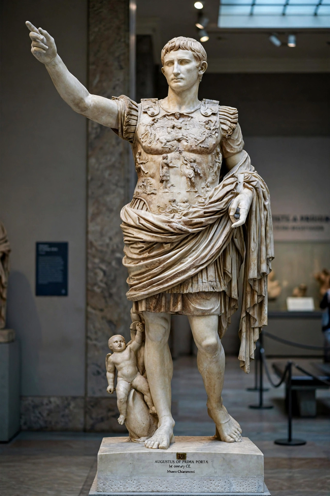

Augustus
| Reign | 27 BC – AD 14 |
|---|---|
| Predecessor | (Roman Republic) |
| Successor | Tiberius |
| Born | 23 September 63 BC, Rome |
| Died | 19 August AD 14 (aged 75), Nola |

[Image: the Augustus of Prima Porta — the marble statue of the emperor in ornate armour, arm raised in address]Augustus (born Gaius Octavius; 23 September 63 BC – 19 August AD 14), also known as Octavian, was the founder of the Roman Empire and its first emperor, reigning from 27 BC until his death in AD 14. His rule initiated the Pax Romana, a period of relative peace and stability across the Roman world that lasted about two centuries.
The great-nephew and adopted heir of Julius Caesar, Octavian rose through the civil wars that followed Caesar's assassination, defeated Mark Antony and Cleopatra at the Battle of Actium (31 BC), and in 27 BC received the name Augustus from the Senate while amassing constitutional powers that made him ruler in all but name.
Reign and reforms
Augustus reformed Rome's finances, military, administration and provinces: he created a standing professional army, the Praetorian Guard, police and fire services for Rome, and an extensive road and building programme — boasting, in his Res Gestae, that he found Rome a city of brick and left it a city of marble.
He extended and secured the empire's frontiers along the Rhine, Danube and Euphrates, annexed Egypt, and established the system — the Principate — by which emperors ruled while preserving republican forms.
Legacy
Augustus died in AD 14 at Nola and was deified by the Senate; he was succeeded by his stepson Tiberius. The month of August is named after him, and his political settlement endured, in evolved form, for centuries in the West and over a millennium in the East.
His image-making was as influential as his statecraft: the famous Prima Porta statue presents him as an idealised commander, and Virgil's Aeneid, written under his patronage, cast Rome's empire as fated and divine.